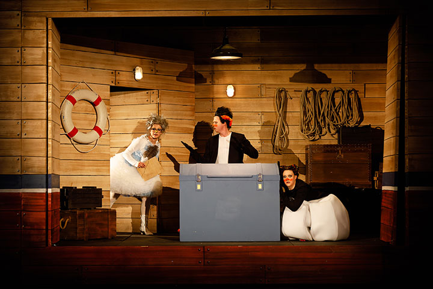
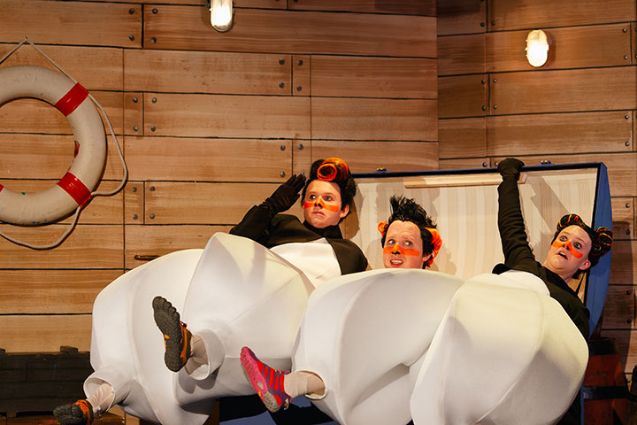

In der Antarktis wird einem schnell mal langweilig. Und wenn Pinguinen langweilig ist, streiten sie sich über Gott und die Welt. Nach einem besonders heftigen Streit zischt einer von drei Pinguinen beleidigt ab. So weit, so normal. Doch den verbleibenden zwei Pinguinen begegnet eine etwas gestresste Taube, die sie mit der Ankündigung überrascht, dass es so lange regnen wird, bis die ganze Erde mit Wasser bedeckt ist. Doch keine Sorge, sie kann den Pinguinen zwei Tickets für die Rettung geben: ein Boot namens „Arche Noah“. Was die beiden der Taube verschweigen: Eigentlich sind sie drei Freunde! Und den dritten Pinguin wollen sie keinesfalls zurücklassen…


Fotos: Philip Brunnader